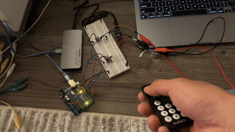
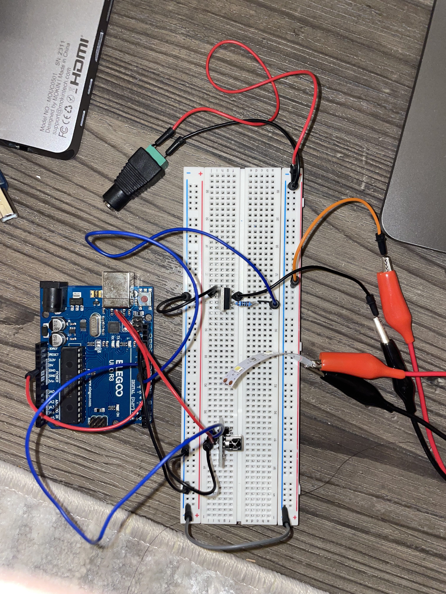

This project uses an N-MOSFET transistor to control a high-power LED strip using an IR remote. The Arduino reads commands from the remote and adjusts the brightness of the LED strip accordingly.

Animated GIF of circuit in action - LED strip responding to IR remote control
This project uses an IR remote receiver (input sensor with library) to control a high-power LED strip through an N-MOSFET transistor. The circuit demonstrates the separation of logic power (5V Arduino) from load power (external 12V supply for the LED strip).
The IR remote allows you to:
The MOSFET acts as an electronic switch, allowing the low-power Arduino PWM signal (pin 9) to control the high-power LED strip powered by an external 12V supply. This demonstrates proper transistor-based power control with separated logic and load circuits.
Circuit schematic showing transistor control of LED strip via IR remote
| Component | Purpose | Connection |
|---|---|---|
| IR Receiver (VS1838B) | Input sensor using IRremote library | Signal → Pin 11, VCC → 5V, GND → GND |
| N-MOSFET (DMT6009LCT) | Electronic switch for high-power load | Gate → Pin 9 (via 100Ω resistor), Drain → LED strip, Source → Common GND |
| LED Strip (12V) | High-load output device | + terminal → 12V supply, - terminal → MOSFET Drain |
| External 12V Power Supply | Separate load power from logic power | + → LED strip, - → Common GND with Arduino |
| 100Ω Gate Resistor | Current limiting for MOSFET gate | Between Arduino Pin 9 and MOSFET Gate |

The MOSFET gate is voltage-controlled and draws minimal current in steady state. However, during switching transitions, there is capacitive charging current due to the gate-source capacitance (typically 200-400pF for this MOSFET). A 100Ω resistor limits the peak current while still allowing fast switching:
Peak gate charging current:
I_gate_peak = V_PWM / R_gate
I_gate_peak = 5V / 100Ω = 50mA (during switching transitions)
Average current (steady state):
I_gate_avg ≈ 0 mA (gate draws no steady-state current once charged)
Why 50mA peak is acceptable: Although Arduino pins are rated for 40mA continuous current, the 50mA peak only occurs for very brief moments (microseconds) during PWM transitions when the gate capacitor is charging or discharging.
Specifications: 12V, ~1.5A maximum (18W)
Power calculation:
P = Voltage × Current
P = 12V × 1.5A = 18W
At full brightness (analogWrite(255)):
I_LED = 1.5A flows through MOSFET Drain-Source path
MOSFET Current Justification:
From the DMT6009LCT datasheet:
The MOSFET operates well within safe limits with substantial headroom. Even if the LED strip drew 3× its rated current (4.5A), the MOSFET would still only be at 7.5% of its maximum rating.
| Location | Voltage | Current | Notes |
|---|---|---|---|
| Arduino Pin 9 | 0V to 5V (PWM) | ~50mA peak, ~0mA avg | PWM signal; peak during transitions only |
| After 100Ω Resistor | 0V to ~4.95V | ~50mA peak, ~0mA avg | Minimal voltage drop (50mA × 100Ω = 5V during peak) |
| MOSFET Gate | 0V to ~4.95V | < 1µA (steady state) | Nearly full 5V drive for strong saturation |
| LED Strip (+) | 12V | 0A to 1.5A | From external 12V power supply |
| MOSFET Drain | ~0.15V to 12V | 0A to 1.5A | Low when ON (V = I × RDS(on)), 12V when OFF |
| MOSFET Source | 0V (GND) | 0A to 1.5A | Common ground reference |
| Common Ground | 0V | 1.5A (return path) | Shared between Arduino GND and 12V supply GND |
Voltage drop calculation across MOSFET when ON:
From datasheet: R_DS(on) ≈ 0.1Ω (typical at V_GS = 4.5V)
V_drain = I_drain × R_DS(on)
V_drain = 1.5A × 0.1Ω = 0.15V
This minimal voltage drop means almost all 12V reaches the LED strip.
// include library to handle infrared (ir) signals
#include <IRremote.h>
// define the pin connected to the ir receiver
#define IR_PIN 11
// define the pin connected to mosfet gate (controls led strip)
// this pin is initialized as OUTPUT in setup()
// upon startup, digital pins are in INPUT mode with high impedance
// once set to OUTPUT, pin 9 starts at LOW (0V) state
#define LED_PIN 9
// initial brightness level (0–255) - middle range
int brightness = 128;
// track if led is on or off - starts as off
bool ledOn = false;
void setup() {
// start serial monitor for debugging at 9600 baud rate
Serial.begin(9600);
// start ir receiver on defined pin with LED feedback enabled
IrReceiver.begin(IR_PIN, ENABLE_LED_FEEDBACK);
// set led pin as output - transitions from INPUT to OUTPUT mode
// pin is now driven and can source/sink current
// starts at LOW state (0V), keeping MOSFET off
pinMode(LED_PIN, OUTPUT);
}
void loop() {
// check if an ir signal has been received
if (IrReceiver.decode()) {
// store received ir command as 16-bit unsigned integer
uint16_t code = IrReceiver.decodedIRData.command;
// print label to serial monitor for debugging
Serial.print("Received code: ");
// print the actual code value received from remote
Serial.println(code);
// --- power button: toggle led strip on/off ---
switch (code) {
// if the "power" button code is received
case 69:
// toggle led state between on and off
ledOn = !ledOn;
// if led should be on
if (ledOn) {
// turn led fully on by setting PWM duty cycle to 100%
// this applies 5V to gate through 100Ω resistor, turning MOSFET fully on
analogWrite(LED_PIN, 255);
} else {
// turn led off by setting PWM duty cycle to 0%
// this applies 0V to gate, turning MOSFET off
analogWrite(LED_PIN, 0);
}
break;
}
// --- up button: increase brightness ---
// if "up" button pressed (code 9) and led is currently on
if (code == 9 && ledOn) {
// increase brightness by 25 units
brightness += 25;
// cap brightness at maximum value of 255
if (brightness > 255) brightness = 255;
// apply new brightness to led using PWM
// higher values = longer ON time per cycle = brighter LED
// MOSFET switches more frequently at higher duty cycle
analogWrite(LED_PIN, brightness);
// print feedback to serial monitor
Serial.print("Brightness increased to ");
Serial.println(brightness);
}
// --- down button: decrease brightness ---
// if "down" button pressed (code 7) and led is currently on
if (code == 7 && ledOn) {
// decrease brightness by 25 units
brightness -= 25;
// prevent going below minimum value of 0
if (brightness < 0) brightness = 0;
// apply new brightness to led using PWM
// lower values = shorter ON time per cycle = dimmer LED
// MOSFET spends more time OFF at lower duty cycle
analogWrite(LED_PIN, brightness);
// print feedback to serial monitor
Serial.print("Brightness decreased to ");
Serial.println(brightness);
}
// ready the receiver to receive the next ir signal
IrReceiver.resume();
}
}
Key Code Features:
Based on the DMT6009LCT datasheet, pins 2 and 3 are the Drain and Source pins respectively. The absolute maximum ratings section shows:
The absolute maximum continuous current between Drain (pin 2) and Source (pin 3) is 60 amperes at room temperature (25°C). This rating assumes adequate heat sinking and proper thermal management. At elevated ambient temperatures (70°C), this derates to 43A.